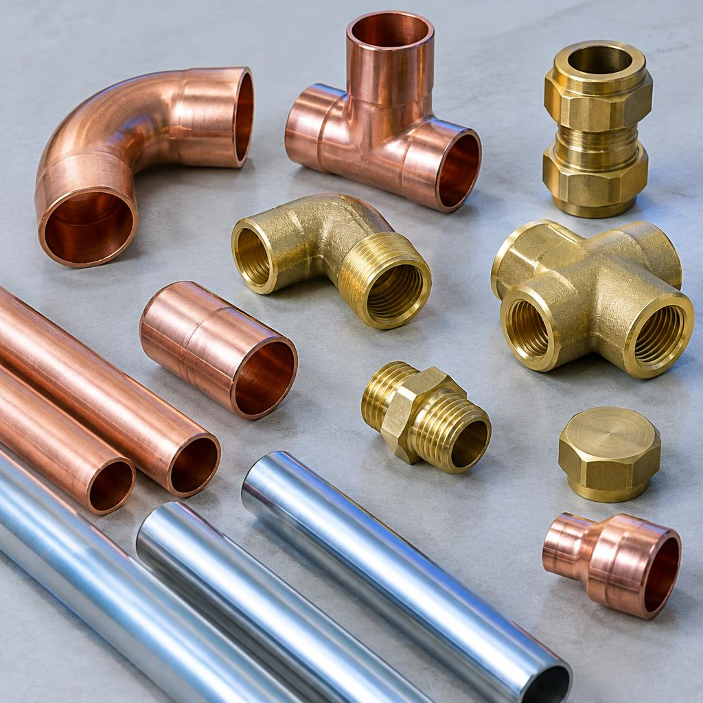
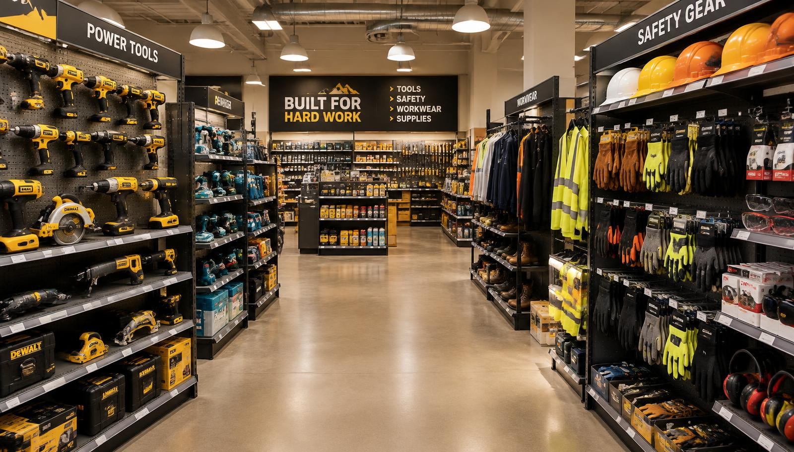
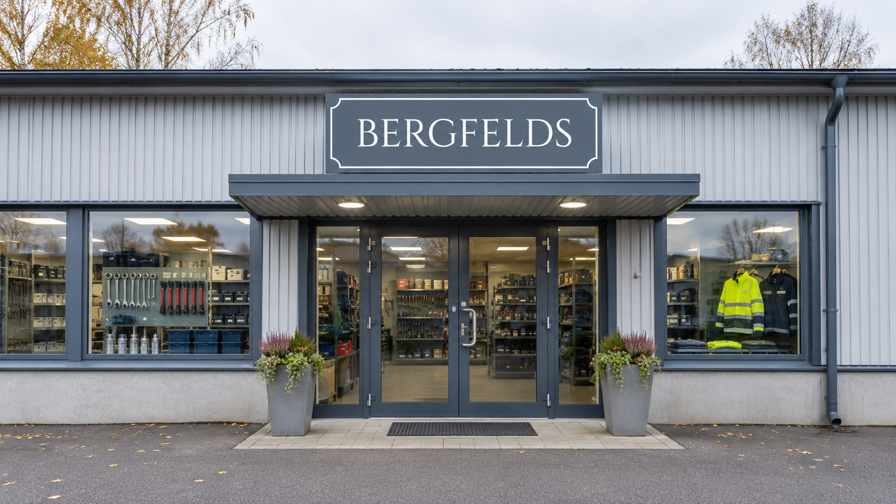

Personlig service
Hos oss får du hjälp av människor som tar sig tid att förstå dina behov.
Vi hjälper företag att hitta produkter och förnödenheter för industri, VVS, verkstad och Mark & VA. Med personlig service och god produktkunskap gör vi dina inköp enklare.
Vi hjälper dig med produkter och lösningar inom flera områden. Hittar du inte det du söker? Kontakta oss så undersöker vi möjligheterna.

Förbruknings- och underhållsprodukter samt utrustning för industrin.
Läs mer →
Rör, kopplingar, ventiler och andra VVS-produkter.
Läs mer →
Verktyg, maskiner, tillbehör och förnödenheter.
Läs mer →
Produkter för vatten, avlopp, dränering och markarbeten.
Läs mer →Vi vill vara en trygg och personlig inköpspartner för ditt företag.
Hos oss får du hjälp av människor som tar sig tid att förstå dina behov.
Vi hjälper dig hitta rätt och undersöker möjligheten att ta hem det du söker.
Produktkunskap, kvalitet och långsiktiga relationer står i centrum.
Ring, mejla eller skicka en förfrågan med information om produkten.
Vi går igenom ditt behov och hjälper dig med lämpliga alternativ.
Vi hjälper dig vidare med beställning och tillgänglighet.
Kom förbi med din beställning eller förfrågan – eller hör av dig via telefon och mejl.

Kontakta oss och berätta vad du behöver. Vi hjälper dig gärna att hitta rätt produkt eller lösning.